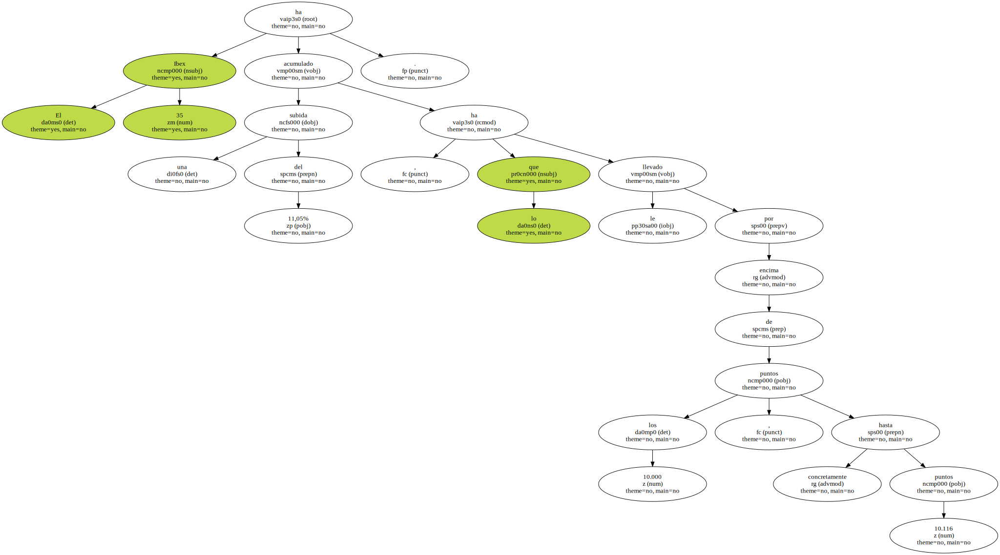
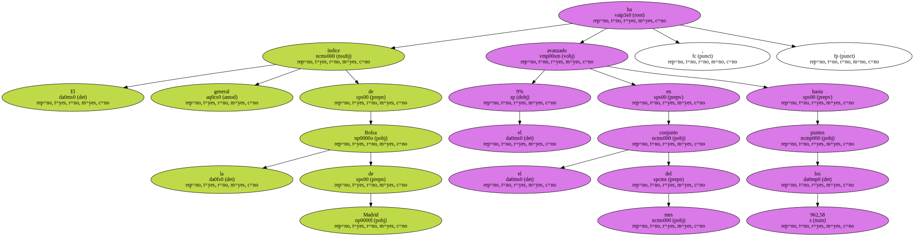
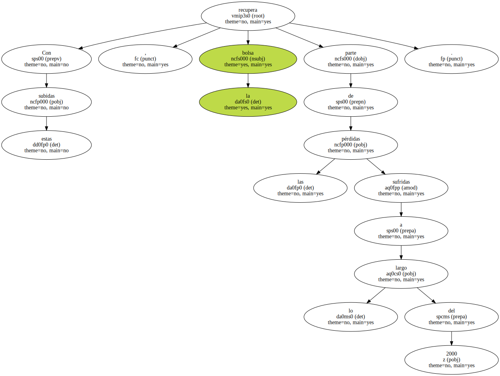
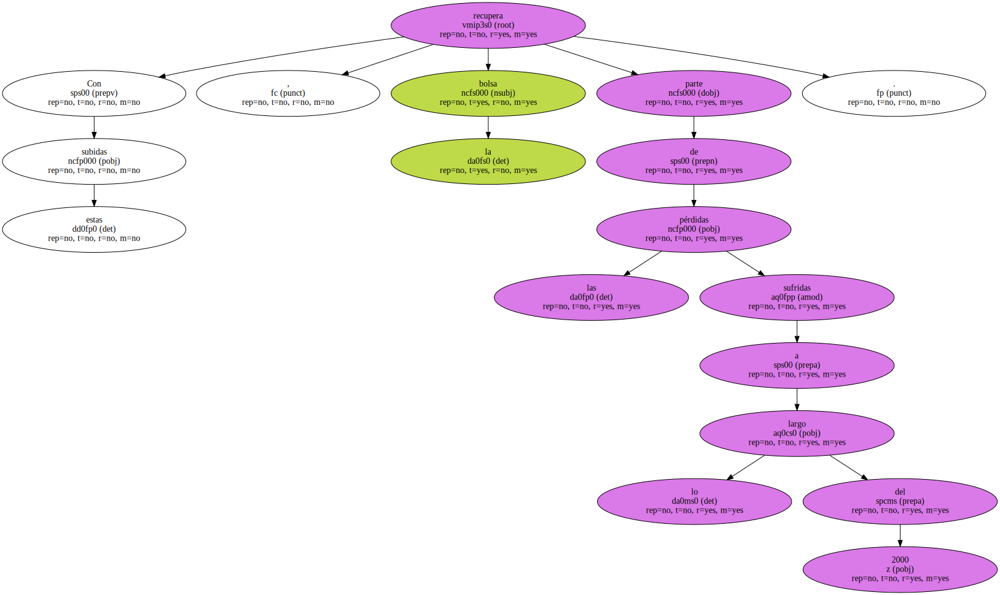
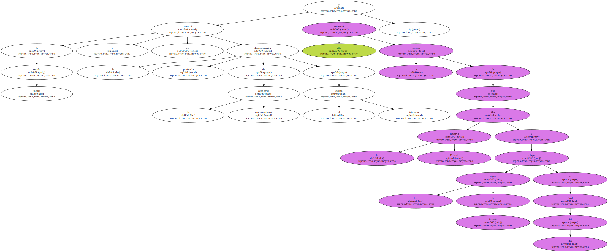
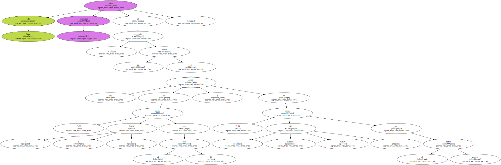
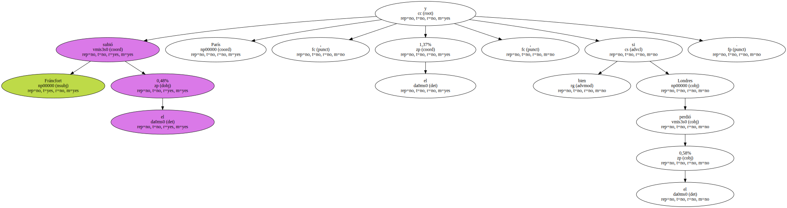
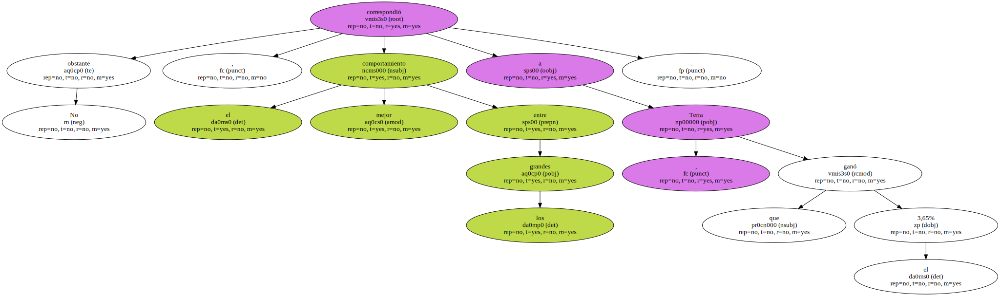

Las bolsas españolas cerraron ayer el mejor enero de su historia.

El Ibex 35 ha acumulado una subida del 11,05% , lo que le ha llevado por encima de los 10.000 puntos , concretamente hasta 10.116 puntos.
El índice general de la Bolsa de Madrid ha avanzado el 9% en el conjunto del mes , hasta los 962,58 puntos.
El Ibex Nuevo Mercado , por su parte , se ha revalorizado el 33,3% , hasta los 4.494,30 puntos.
Con estas subidas , la bolsa recupera parte de las pérdidas sufridas a lo largo del 2000.
Ayer , la bolsa celebró con subidas las malas noticias que llegaron de EEUU.
A media sesión , se conoció la profunda desaceleración de la economía norteamericana en el cuarto trimestre y ello aumentó la certeza de que la Reserva Federal iba a rebajar los tipos de interés al final del día.
Todo ello llevó el optimismo al mercado , que cerró con una subida de 79,80 puntos ( el 0,80% ) en el Ibex 35 y de 7,66 puntos ( también del 0,80% ) en el índice general.
Algo parecido sucedió en las principales bolsas europeas.

Fráncfort subió el 0,48% y París , el 1,37% , si bien Londres perdió el 0,58%.
En la bolsa española , la publicación de los datos estadounidenses benefició principalmente a los dos grandes bancos españoles , BBVA y BSCH , que cerraron con alzas del 2,38% y 1,55% , respectivamente.
No obstante , el mejor comportamiento entre los grandes correspondió a Terra , que ganó el 3,65%.
